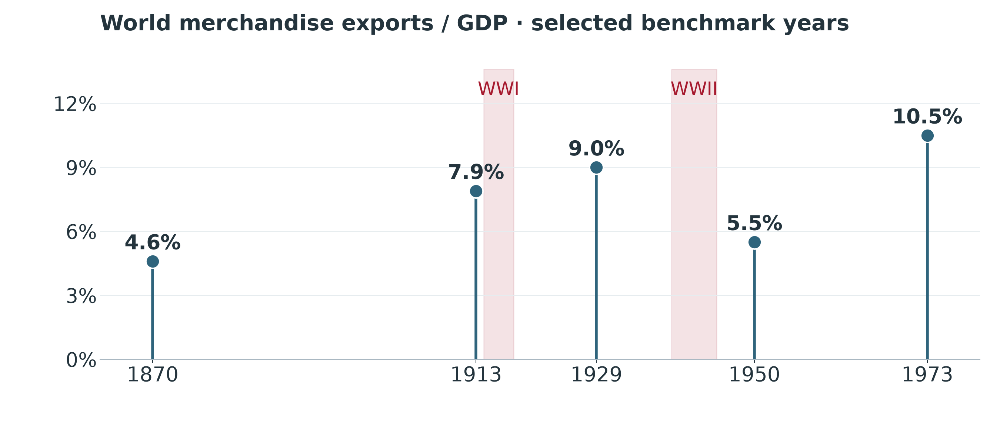
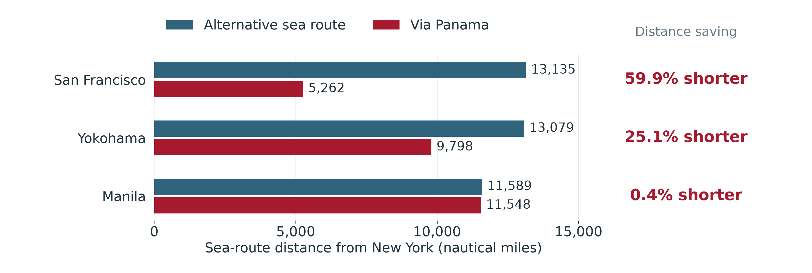
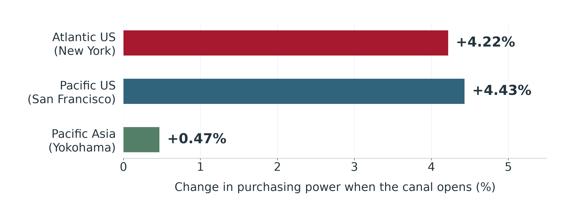
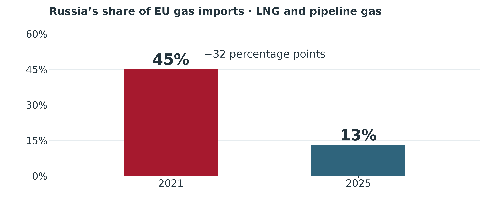
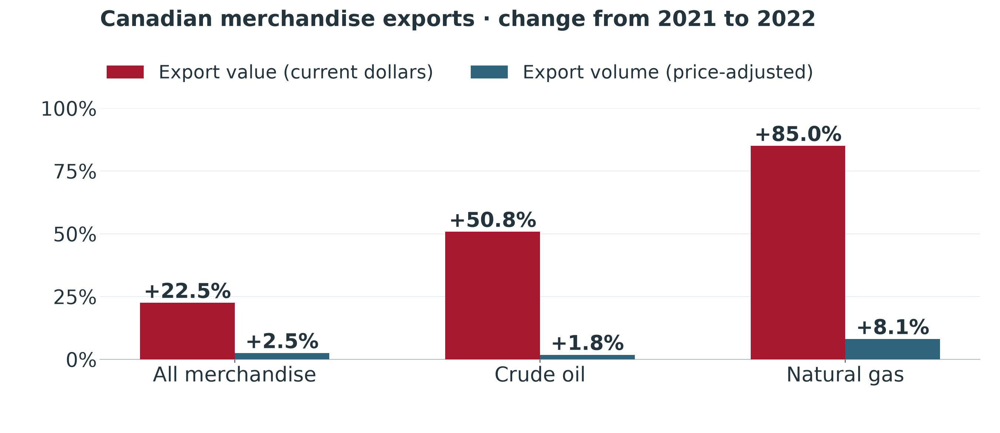

ECON 342 · Week 11 · November 24, 2026
War, peace,
and trade
When do the gains from exchange support peace, and when does dependence create insecurity?
10:30 History and causal comparisons
10:37 Panama: routes and model
10:55 Suez: routes and trade
11:03 Colombia: income and violence
11:12 Atlantic trade and conflict
11:17 Five-minute break
11:22 Dependence, Europe, Canada
11:35 Diversification and policy
11:43 Zheng: bargaining and peace
11:53–noon Discussion and synthesis
Does trade make peace more valuable?
Exchange lets countries obtain resources without controlling the territory that produces them. Conflict can destroy those gains.
Dependence can also become a source of pressure when a partner controls an essential market or input.
Our route through history
- History before 1914
- Panama: building market access
- Three conflict comparisons
- Energy dependence and Canada
- Bargaining and peace
Source: Inspired by Jacques Fontanel’s teaching in Grenoble and his 2014 essay, Le commerce international est-il un facteur de paix ?.
Our trade models explain what conflict puts at risk
| Model | Gains that disruption can threaten |
|---|---|
| Ricardo and H–O | Access to goods that partners can produce at lower relative cost. |
| Krugman | A larger market supports production scale and consumer variety. |
| Heterogeneous firms | Exporters invest in market entry and customer relationships that disruption can damage. |
| Gravity | Large nearby markets are valuable, so replacing them can be expensive. |
Trade gives countries something to lose. Today’s question is how that loss enters political decisions.
War, economic coercion, and a trade dispute differ
Armed conflict
States or organized armed groups use military force. Human loss and destruction extend far beyond the trade effects we measure.
Economic coercion
A state restricts access to goods, finance, or markets to influence another state’s choices.
Trade dispute
Governments disagree over commercial rules. Negotiation or adjudication can contain the dispute.
Discuss A tariff dispute between Canada and the United States is evidence about commercial conflict. What additional evidence would a claim about military conflict require?
International trade was substantial before 1914

Integration preceded the First World War. The benchmark fell between 1929 and 1950.
Source: Findlay and O’Rourke (2001), Table 3, p. 46, Historical benchmarks from Maddison (1995, 2001). Merchandise exports/GDP. Exports only, not exports plus imports. Benchmark observations do not show the annual path.
1914 tests a strong claim about commerce
The historical observation
Extensive commercial integration coexisted with the outbreak of the First World War.
Commercial losses were one part of a broader calculation involving security and territory.
The inference
This history rejects the claim that integration guarantees peace.
It leaves open whether trade reduced the likelihood of conflict relative to a world with weaker ties.
Discuss Why would one conflict be insufficient to prove that trade never restrains conflict?
Source: Fontanel (2014), pp. 55–56. The missing comparison is what would have happened with different trade ties.
A causal claim needs a credible comparison
Peace can encourage trade. Alliances and geography can affect both. A correlation leaves these explanations entangled.
Quasi-experimental evidence
Use an outside shock that changes exposure differently across otherwise comparable places or trading pairs.
The missing outcome
Ask how the exposed units would have changed without that shock. The comparison group helps estimate this counterfactual.
For each study: what changed, who was more exposed, and what could make the comparison misleading?
Source: Teaching framework. Quasi-experimental designs rely on assumptions about comparability; researchers did not assign the shock.
Panama: building a shorter route to market
Construction began under US administration in 1904; commercial passage opened in August 1914. A 1913 map compared the routes ships could use.

Source: Marshall (1913), map on p. 226; University of South Florida collection. Nautical miles; alternatives: Magellan for San Francisco, Suez for Yokohama and Manila. Route arithmetic: a 60% distance saving does not imply a 60% freight-cost saving. Chart CSV · Source notes.
A canal changes who can reach which markets
to particular buyers
and better market access
firms, jobs, and population
Gravity
A market becomes economically closer. The gain depends on which routes become cheaper and how large the destination markets are.
Krugman
More customers can support longer production runs and spread fixed costs. Firms and workers may relocate towards improved access.
For a Canadian port investment, ask which buyers become easier to reach and whether inland connections let firms use the new route.
Source: Model interpretation. “Market potential” combines destination size and transport costs. Distance savings alone leave tolls, congestion, inland transport, and firms’ responses unmeasured.
A structural model compares two complete economies
Run the same economy twice. Change the sea routes available to firms and consumers.
Keep fixed
- Three regions and their workers
- Productivity and consumer preferences
- One distinct good from each region
Let adjust
- Purchases from each supplier
- Wages and selling prices
- The cost of the consumption basket
Spending must match income, and firms’ sales must pay for production. The model finds prices and wages that make these plans consistent.
Classroom structural-gravity model with constant returns and fixed regional populations. The experiment isolates a transport channel. Krugman’s entry and scale effects and migration are extensions. All labour sizes and behavioural parameters are illustrative.
The shorter route lowers a delivered cost
Assume a 20% shipping increment per 10,000 nautical miles.
| New York–San Francisco | Canal off | Canal on |
|---|---|---|
| Route distance | 13,135 | 5,262 |
| Delivered cost multiplier | 1.2627 | 1.10524 |
| Cost if the producer’s price is 10 | 12.627 | 11.0524 |
The route is about 60% shorter. At the same producer price, this assumed shipping technology lowers delivered cost by about 12.5%.
Historical distances: Marshall (1913). The shipping parameter and price of 10 are illustrative. In the full model, producer prices also adjust. Shipping uses resources (“iceberg” costs). Tolls, construction costs, and maintenance are omitted.
Canal on: who gains purchasing power?
Illustrative model results: same fundamentals, different sea routes

Pacific Asia: wages −0.87%, basket prices −1.33%. The cheaper basket raises purchasing power.
Open the interactive canal experiment
Assumptions: trade elasticity 4; shipping increment 20% per 10,000 nautical miles; relative labour 2:1:3. Historical New York routes, assumed San Francisco–Yokohama distance (4,600 miles). Project costs and migration are omitted.
Published evidence: access and regional population
Maurer and Rauch compare US counties with different predicted gains in market access from the canal, using population observations from 1880 to 1940.
Their preferred estimate
1% more market potential
→ about 2.3% more population by 1940.
This is a long-run population response, not an annual growth rate or a trade-flow estimate.
Why the comparison matters
When the analysis also allows each state to follow its own time path, the estimate is no longer statistically distinguishable from zero.
Much of the canal exposure varies across states, making it difficult to separate from other regional changes.
Source: Maurer and Rauch (2023), Economic geography aspects of the Panama Canal, Tables 3 and 6. A causal reading requires access gains to be unrelated to other differential growth shocks after the study’s adjustments. Population can move between regions, so this does not measure national welfare gains.
Suez: a war closes a commercial shortcut
Transport disruption → bilateral trade
| Design element | What the study compares |
|---|---|
| Shock | The Suez Canal closes in June 1967 and reopens in June 1975. Ships must take alternative routes. |
| Exposure | Some country pairs face much longer sea routes; others face little or no change. |
| Comparison | Compare changes in bilateral trade across these groups over the same years, including after reopening. |
| Key assumption | Without the closure, more-exposed pairs would have had comparable trade changes after accounting for common shocks and persistent pair differences. |
War need not occur in your country to disrupt your trade. Geography determines exposure.
Source: Feyrer (2021), JDE, author replication archive. Sample excludes combatants and several nearby countries, oil exporters, and certain neighbouring pairs. Other route-specific shocks remain a threat.
Longer detours went with a larger trade decline


The lines remove persistent pair differences and shocks common to all pairs. Zero is the adjusted baseline, not zero trade. Lower values mean weaker trade after adjustment. Pre-closure trends also differ; the comparison needs scrutiny.
Source: Feyrer (2021), Figure 1 reconstruction. Balanced panel, 1958–84. Adjusted group averages, not four causal coefficients. Table 1, col. 4: sea-distance elasticity −0.458 (SE 0.0831). Transport channel; not a test of whether trade prevents war. Chart CSV · Source notes.
A simple calculation: how much exchange is at risk?
Compare conflict with continued peace. Hypothetical expected non-trade benefit = 7, other expected costs = 4, and gains from exchange at risk = 12.
0 units preserved
12 units lost
Here −9 favours peace and 0 means indifference. Larger trade losses make conflict less attractive, holding the other incentives fixed.
Teaching illustration. Gains mean economic benefits, not gross export revenue. All values use the same hypothetical units. This is not a forecast or a probability of war. At 9 units preserved, the net advantage is zero within this illustration.
Political choices depend on whose losses count
Economic losses
Consumers lose purchasing power. Firms lose buyers or inputs. Workers can lose jobs. Some producers gain from higher prices or protection.
Political transmission
These groups differ in influence. Governments also value security, territory, and political survival. A national income loss need not outweigh every other objective.
The H–O connection: distribution helps explain support and opposition. Aggregate gains from exchange alone cannot tell us which policy a government will choose.
Source: Fontanel (2014), economic interests and security. Connection to the course’s distributional analysis.
Colombia: the same price movement, different incentives
Commodity income shocks → civil violence
Dube and Vargas study annual municipality-level violence, 1988–2005. Places differ in how much they produce coffee and oil.
Labour-intensive coffee
Higher prices can improve civilian earnings. Joining an armed group then sacrifices a better alternative.
Oil and resource revenues
Higher prices can increase revenues worth capturing. Armed groups may have more to gain from control.
Outside variation: foreign export supply shift coffee prices; climate suitability helps predict local production. World oil prices interact with local production measured in 1988.
Source: Dube and Vargas (2013), Table 2 and Sections 4–5. Coffee uses instrumental variables; oil-price exogeneity is assumed. Municipality/year effects and regional trends address some competing explanations.
Higher coffee and oil prices have opposite estimated effects


Dots are estimated average changes; bars show 95% uncertainty intervals. Fractional counts describe expected averages. A causal reading requires the instruments and oil-price changes not to track other causes of differential violence.
Source: Dube–Vargas (2013), Table 2, col. 2. Our transformation: 10% price rise at mean producer exposure, relative to zero exposure. Approximate normal intervals hold exposure fixed. Compare directions; exposures differ. Earnings and resource revenues are proposed mechanisms. Not independently re-estimated. CSV · Notes.
Atlantic trade: can we test the reverse causal arrow?
Atlantic market integration → conflict within Europe
Ahsan, Panza and Song study European ties with the New World. Their integration proxy measures how much a wheat-price change in one market passes into the other. Storms affect routes differently because sailing exposure differs.
× wind-based sailing time
market integration
between European countries
Instrumental variables, in words: use the part of integration shifted by Atlantic weather and sailing exposure. For a causal reading, that variation must affect European conflict only through trade.
Source: Design checked in CEPR DP14206, revised March 2020, Table 4. Data cover 1640–1896; main IV estimates use the sailing era before 1871. Later publication: Economic Journal (2025).
Atlantic evidence supports a conditional peace mechanism
Estimated result
Greater Atlantic market integration is estimated to reduce the onset of conflicts between European countries.
Higher wages and smaller armies are consistent with a greater opportunity cost of fighting.
A concrete challenge
Storms can also destroy fleets and alter military power. That could affect conflict without a change in trade.
Excluding naval conflicts helps, but a weakened fleet could also change incentives to begin a land conflict.
Trade with the New World may affect peace within Europe. This says neither that every trading pair becomes peaceful nor that colonial expansion was peaceful.
Source: Ahsan, Panza and Song, March 2020 working paper, Tables 4–5. Qualitative IV finding; final 2025 tables are not used here. The military-power channel is an exclusion-restriction concern, not a demonstrated invalidation.
Five-minute break
11:17–11:22
Next: dependence, Canadian choices, and Zheng’s model of peace.
Dependence becomes costly when replacement is difficult
| Dimension | More exposed | Less exposed |
|---|---|---|
| Importance | Essential input with few substitutes | Consumption can adjust cheaply |
| Supplier options | One practical source | Several usable suppliers |
| Time | Switching takes years | Inventories bridge a short disruption |
| Infrastructure | Routes lead to one market | Ports and networks reach alternatives |
A trade share is a starting point. Vulnerability depends on the cost of adjustment.
Source: Hirschman (1945), National Power and the Structure of Foreign Trade; WTO (2023), Chapter C. Dimensions to investigate, not a measured vulnerability index.
Expected future access matters for today’s incentives
Access is expected to continue
Preserving peace protects future income and inputs. Trading firms have reasons to defend stable relations.
A cutoff is already expected
Some future gains appear lost even under peace. The extra economic sacrifice from confrontation can therefore be smaller.
Two countries with the same trade flows today can face different incentives if their expectations differ.
Source: Copeland (1996), Economic Interdependence and War; Martin, Mayer, and Thoenig (2008). Conditional mechanisms. Beliefs need separate evidence in any historical case.
After 1945, European integration changed the rules
War ends in a devastated Europe. Reconstruction and security are central concerns.
Six countries sign the coal and steel treaty in 1951. The Community starts in 1952 under common institutions.
The Treaty of Rome broadens integration. The European Economic Community begins in 1958.
Shared rules and market access can reinforce each other. Alliances and reconstruction also changed: this history does not isolate a causal trade effect.
Source: European Union, history 1945–59. Founding six: France, West Germany, Italy, Belgium, Netherlands, and Luxembourg.
Canada’s history connects security and commercial rules
| Date | Institutional change |
|---|---|
| 1817 | The United Kingdom and United States agree to limit naval forces on the Great Lakes. Canada is still part of British North America. |
| 1989 | The Canada–U.S. Free Trade Agreement enters into force. |
| 1994 | NAFTA extends the agreement to include Mexico. |
| 2020 | CUSMA replaces NAFTA, maintaining a framework for North American trade. |
Security cooperation and commercial integration developed over a long history. The modern trade agreements cannot alone explain that history.
Source: Canada Treaty Series: 1817 naval agreement; Global Affairs Canada: CUSFTA; CUSMA implementation.
Europe reduced its reliance on Russian gas

Russian gas fell from 45% to 13% of EU gas imports between 2021 and 2025: a 32 percentage-point decline. Import volumes, prices, and switching costs are needed to assess the adjustment.
Source: Council of the European Union, ending Russian energy imports. Shares of gas imports, not all energy. These shares do not measure the total cost of adjustment. Descriptive evidence: supply, demand, and policy changed together.
Canada’s 2022 export boom was largely a price story

Receipts grew much faster than volumes. Higher prices can benefit producers while raising costs for buyers; export revenue alone cannot establish a welfare gain.
Source: Statistics Canada, International merchandise trade: Annual review 2022, May 9, 2023. Year-over-year growth. War contributed to price pressures alongside other supply and demand conditions. Descriptive evidence: war, supply, and demand changed together. H–O motivates asking whose earnings and purchasing power changed.
Diversification changes two different incentives
Resilience and autonomy
More usable alternatives reduce the harm from one supplier or buyer cutting access. This can reduce that partner’s coercive leverage.
The bilateral opportunity cost
Easier replacement can also reduce what a country loses by breaking a particular relationship.
These mechanisms concern different effects. Their combined impact on conflict depends on the wider setting.
Source: Martin, Mayer, and Thoenig (2008); WTO (2023), pp. 54–55, including subsequent evidence and mechanisms through which diversified trade can support security.
Canada can preserve trade gains while improving options
| Possible response | Benefit to investigate | Cost or limit to investigate |
|---|---|---|
| Ports and transport links | Reach additional buyers and suppliers | Construction cost, time, and actual demand |
| More supplier contracts | Maintain usable alternatives | Qualification and coordination costs |
| Strategic inventories | Bridge temporary interruptions | Storage costs and obsolescence |
| Stable trade institutions | More predictable access and dispute handling | Enforcement and political credibility |
Gravity explains why replacing nearby markets is costly. It also helps identify which new connections are plausible.
Source: Policy comparison for discussion, informed by WTO (2023), Chapter C. Evaluate benefits for a specified product and disruption.
Zheng: a peace offer and the alternative
Two rivals dispute a valuable asset. Each privately knows how cheaply it can fight. A mediator proposes a division.
Both accept
They receive the agreed shares. Conflict is avoided.
Either rejects
They compete through costly effort. Greater effort wins; each pays for its own effort even when it loses.
The attraction of rejecting depends on what each rival expects the other to do next.
Source: Charles Z. Zheng (2019), Necessary and Sufficient Conditions for Peace, Journal of Economic Theory, pp. 136–140. Verbal version of the model. “Strength” means lower cost per unit of effort.
Peace can depend on expectations about rejection
An agreement that can work
Both accept when they share particular expectations about what rejection would trigger.
Zheng calls this implementable peace.
A stronger requirement
Both prefer acceptance across the different expectations about conflict allowed by the model.
Zheng calls this secure peace.
An agreement can meet the first standard and fail the second.
Connection to trade: trade can raise the gains preserved by peace. Reaching a settlement also requires understanding what each side expects to gain by refusing it.
Source: Zheng (2019), pp. 136–140. The second standard concerns conflict responses consistent with the model. The trade connection is our course interpretation.
Why accepting peace might reveal weakness
In Kamranzadeh and Zheng’s model, the rivals initially have identical chances of being strong or weak.
- Accepting a modest offer can suggest weakness. That is risky if the opponent rejects and conflict follows.
- A generous offer can make one side accept whether strong or weak. Its acceptance then conceals its strength.
- If the other side also accepts, peace follows. Any weakness its acceptance reveals can no longer be exploited in that contest.
The surprising result: under the paper’s conditions, unequal shares maximize the two sides’ combined expected welfare. Conflict remains possible.
Source: Ali Kamranzadeh and Charles Z. Zheng (2025), Unequal Peace, International Economic Review. A result within a specified model; the objective is combined expected welfare.
Discussion: what should Canada make more resilient?
Choose one product or industry discussed in this course.
- Explain the gains Canada obtains from trading it.
- Identify one plausible disruption and why replacing access could be difficult.
- Propose one response and the evidence needed to judge its cost and benefit.
A strong answer distinguishes a historical fact, a model mechanism, and a policy judgment.
Ungraded classroom discussion. Surviving one month and adjusting over ten years are different problems.
Three causal questions, three different lessons
| Case | What the evidence supports | What remains conditional |
|---|---|---|
| Suez | A route disruption can reduce trade even among distant countries. | Other shocks must not track route exposure. |
| Atlantic | Greater Atlantic integration is estimated to reduce European conflict onset. | Weather must affect conflict through trade alone. |
| Colombia | Coffee and oil price increases have opposite estimated effects on local violence. | Other changes must not explain the price-related differences across municipalities. |
For Canada, investigate the mechanism and local conditions before importing another country’s estimated effect.
Source: Synthesis of the three designs. Zheng adds a bargaining mechanism: valuable peace can still require an agreement both sides are willing to accept.
Empirical papers and reproducible figures
- Feyrer (2021): Suez Canal closure and reopening. Author page links to the article and replication package. Our chart reconstructs Figure 1 from those data.
- Dube and Vargas (2013): commodity prices and civil conflict. Our chart transforms Table 2 coefficients into a common 10% price increase.
- Ahsan, Panza and Song (March 2020): Atlantic trade and European conflict. The design discussed here uses this accessible version. Later published article (2025).
Keep the data, exact source version, transformations, and assumptions together.
Downloads: Suez CSV · Colombia CSV · Source notes and calculations.
Reading and data links
- Fontanel (2014): Le commerce international est-il un facteur de paix ?
- Martin, Mayer, and Thoenig (2008): Make Trade Not War?
- WTO (2023): World Trade Report, Chapter C on trade and security
- Zheng (2019): Necessary and Sufficient Conditions for Peace
- Kamranzadeh and Zheng (2025): Unequal Peace
- Council of the EU: Russian energy import shares
- Statistics Canada: 2022 merchandise trade review
Could synthetic DiD improve the comparison?
| Outcome | Population, employment, or total trade in places that existed before the canal. |
|---|---|
| Exposure | Route-cost savings predicted from pre-opening geography and market links. |
| Synthetic comparison | Weight lower-exposure places to resemble higher-exposure places before opening; then compare their changes. |
| Main challenge | The First World War also began in 1914. Its effects could differ across those places. Construction was anticipated, and other places could gain or lose trade too. |
The comparison must approximate what would have happened without the canal. A good pre-opening match helps us investigate that claim.
Optional research-design discussion. Source: Proposed extension, not an estimated result. The published paper uses continuous-exposure DiD, not SDID. Its panel has 1880, 1900, 1910, 1920, and 1940: few pre-opening observations, with 1910 already during construction. Lower exposure is not necessarily zero exposure.